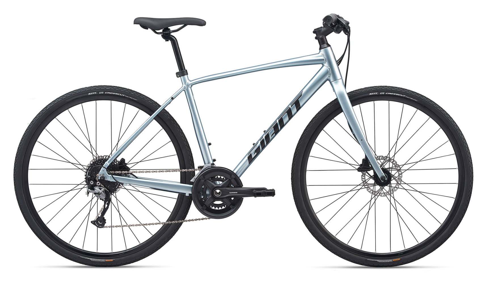
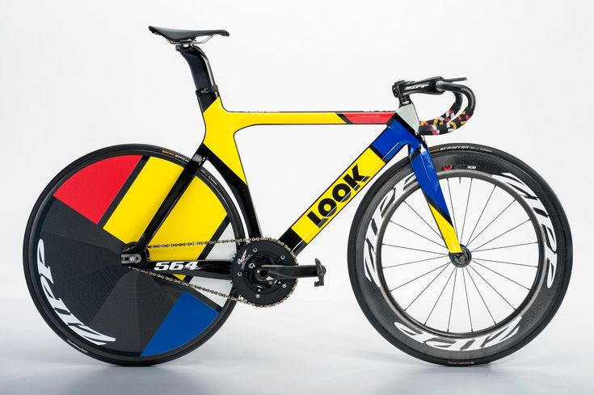
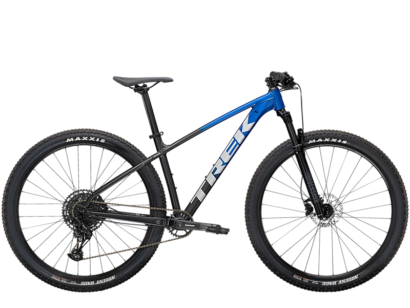

자전거의 종류
포장 도로용
하이브리드
하이브리드 자전거
MTB + 로드 자전거 등 서로 다른 목적의 부품을
혼합한 자전거를 하이브리드라고 부른다.
자동차의 하이브리드를 연상하는
사람들이 많지만 의미가 다르다.
자동차의 경우 하이브리드는 내연기관 + 전기모터처럼
두 종류 이상의 구동계를 함께 탑재한 자동차를 의미한다.
그러나 자전거의 경우 복수의 구동계가 탑재된 자전거를
하이브리드라 부르지 않는다.

로드바이크
속도를 추구하는 자전거.
경륜 자전거의 직계 후손인 픽시를 제외하면
가장 자전거의 원형에 가까운 자전거이다.
크고 가느다란 바퀴와 드롭바가 장착되어 있고
서스펜션이 없는 직립탑승형 이륜자전차를 일컫는 이름.
흔히 사이클이나 로드라고도 부른다.
비슷한 자전거로 타임트라이얼 바이크와
사이클로크로스,그래블 바이크가 있는데
타임트라이얼 바이크는 보통 철인 3종경기중
사이클에 이용되는 자전거로 알고있다.
그리고 UCI규정을 준수 해야하며 준수하지 않는 바이크는
트라이 애슬론이라고 한다.
앞에 설명했던 사이클로크로스와 그래블 바이크는
로드바이크가 비포장도로를 쉽게 달리기 위해 강도와
타이어,휠셋이 다르다.

픽시
고정기어 자전거,
즉 기어변속기와 프리휠이 없는 자전거를 지칭한다.
흔히 영어 약칭인 픽시(fixie)로 지칭한다.
그러나 기어변속 기능이 없다고 모두 픽시라 부르지는 않는다.
어린이용 자전거, 스트라이다, 앞바퀴에
페달이 달린 페니파딩처럼
기어변속기가 탑재되지 않은 자전거도 있지만
이들을 픽시라 부르지 않는다.
픽시는 후륜과 체인링이 체인으로 서로 연결되어 있지만,
기어변속기가 없을 뿐더러
프리휠메커니즘도 장착되지 않은 자전거다.
비포장 도로용
산악자전거
산악 지형용 자전거를 의미한다.
로드바이크가 포장된 도로를 주 무대로 삼는다면,
MTB는 문자 그대로 바위, 나무뿌리, 자갈, 계단, 턱 등이
즐비한 산길을 무대로 하는 자전거 장르이다.
때문에 설계 이념도 최고 속도나 항속 유지능력보다는
거친 지형을 주파하는 튼튼한 구조와
저속대역을 발달시킨 기어비에 몰빵되어 있다.
MTB는 산에서 다양한 용도로 세분화 되어있다.
크로스 컨트리는 일반적인 산악용 자전거 하면 떠오르는
자전거이다.
크로스 컨트리를 제외하고
트레일 바이크,올마운틴,프리라이드,엔듀로 등
거친 산악지형을 위한 자전거도 있다.
마지막으로 다운힐 자전거가 있는데
거친지형을 단숨에 내료로는 용도로 다른 자전거와
달리 등판능력대신 내려갈때의 상황만 고려해 만들어
무겁고 튼튼하다.
하지만 주로 다니는 길과 내리막의 특성으로 매우 위험한 스포츠이며,보호장구가 오토바이급으로
필요하며 부상을 당하면 크게 다칠 수 있으므로
주의가 요한다.